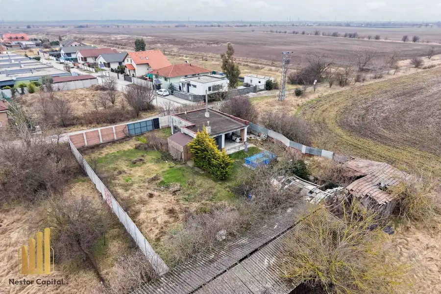
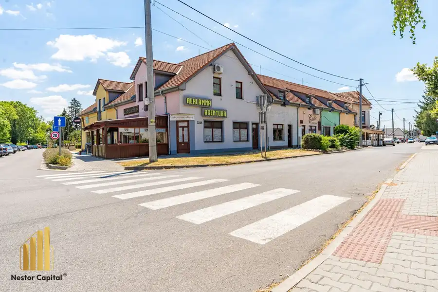
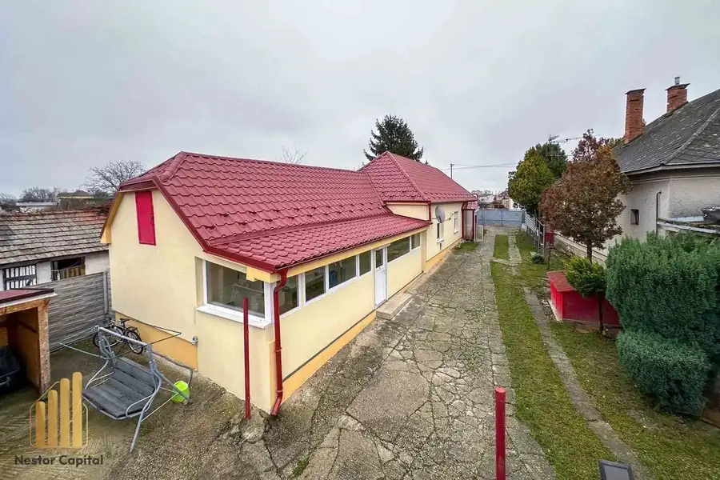

Nestor Capital-Priestranný 2-izbový byt pripravený na nasťahovanie v obľúbenom Prednádraží
Trnava
- Dispozícia2-izbový
- Plocha62 m²
- Poschodie1. z 7
- StavKompletná rekonštrukcia
O nehnuteľnosti
Ak hľadáte byt, do ktorého sa môžete nasťahovať bez ďalších starostí, v lokalite, ktorá dlhodobo patrí medzi najvyhľadávanejšie časti Trnavy, tento 2-izbový byt na Prednádraží môže byť presne to, čo hľadáte.Byt prešiel rekonštrukciou, vďaka čomu dnes ponúka veľmi príjemné, praktické a funkčné bývanie. Dispozícia je riešená tak, aby bol každý meter priestoru využitý čo najlepšie, pričom veľkou výhodou je aj dostatok úložného miesta. O ten sa starajú dve vstavané skrine a samostatný šatník, ktoré výrazne zvyšujú komfort každodenného bývania.Samotný byt pôsobí vďaka svojej veľkosti veľmi vzdušne a priestranne. Rekonštrukcia zahŕňala murované jadro, nové podlahy, bezpečnostné dvere a kompletne novú sanitu, takže nový majiteľ nemusí riešiť nákladné úpravy a môže si byt začať užívať prakticky okamžite.Veľkým benefitom je aj bytový dom, ktorý prešiel obnovou. Dom je zateplený, boli vymenené stúpačky, zrekonštruovaný vchod a k dispozícii je aj nový výťah. Vďaka zatepleniu a tomu, že v spálni je pod podlahou položený Styrodur, je byt príjemne teplý aj počas chladnejších mesiacov, čo prispieva nielen ku komfortu bývania, ale aj k lepšej energetickej efektivite.Byt je zároveň možné vďaka jeho veľkosti a praktickému dispozičnému riešeniu jednoducho upraviť aj na 3-izbový, čo ponúka novému majiteľovi ešte väčšiu flexibilitu bývania a možnosť prispôsobiť si priestor podľa vlastných potrieb.Lokalita už ani nemôže byť lepšia. Prednádražie patrí medzi najobľúbenejšie časti Trnavy najmä vďaka výbornej občianskej vybavenosti a dostupnosti. V blízkosti sa nachádza nákupné centrum MAX, vlaková stanica, Park Janka Kráľa, obchody, kaviarne, škôlka aj škola. Všetko dôležité tak máte doslova na dosah, či už hľadáte pohodlné bývanie pre seba, mladý pár, alebo byt ako zaujímavú investíciu.Tento byt spája praktickú dispozíciu, rekonštruovaný stav, dostatok úložného priestoru a jednu z najžiadanejších lokalít v Trnave. Stačí sa nasťahovať a bývať.Neváhajte a využite príležitosť bývať v tomto príjemnom byte s výbornou polohou a pohodlným riešením priestoru. Kontaktovať nás môžete prostredníctvom e-mailu: patriklinder@nestorcapital.sk alebo na telefónnom čísle: 0905 310 331 V cene nehnuteľnosti je zahrnutá provízia pre realitnú kanceláriu, právny servis a služby nášho hypotekárneho špecialistu. Dostali ste sa do situácie, kedy máte vybranú novú nehnuteľnosť, ale ešte ste nepredali tú svoju? S nami to už nie je problém! Ako profesionálna realitná kancelária ponúkame rýchly odkup vašej nehnuteľnosti. Vyriešte predaj bez stresu a zaistite si financie pre váš nový domov hneď teraz. Kontaktujte nás a my zabezpečíme, aby váš prechod do nového bývania bol plynulý a bezproblémový.
Parametre
| Cena vrátane energií | Nie |
|---|---|
| Druh | 2 izbový byt |
| Dátum zverejnenia | 14. 5. 2026 |
| Energetický certifikát budovy | nie je |
| Orientácia | Západná, Východná |
| Podlažie | 1 |
| Počet nadzemných podlaží | 7 |
| Počet pivníc | 1 |
| Stav nehnuteľnosti | Kompletná rekonštrukcia |
| Typ | Predaj |
| Typ konštrukcie | Panelová |
| Vybavenie | Pivnica, Výťah |
| Úžitková plocha | 62 m² |
Kde to je


Mohlo by Vás zaujímať

DomNové10 180 000 €Nestor Capital-Rodinný dom s veľkým pozemkom 792 m² – ideálny základ pre vaše budúce bývanie Hviezdoslavov 50 m² Predstavte si miesto, kde už dnes môžete bývať, a zároveň máte otvorený priestor vytvoriť si dom presne podľa svojich predstáv. Táto nehnuteľnosť…
Komerčné priestoryNové10 410 000 €Nestor Capital-Investičná budova v srdci Veľkého Medera – podnikanie, bývanie aj stabilný výnos na jednej adrese Veľký Meder 200 m² Ak hľadáte nehnuteľnosť, ktorá spája výbornú lokalitu, okamžitý výnos z prenájmu a zároveň ponúka široké možnosti budúceho využitia, táto budova na…
DomNové10 147 500 €Nestor Capital-Priestranný rodinný dom po kompletnej rekonštrukcii v Hornom Mýte len 15min od Dunajskej Stredy Dunajská Streda 150 m² Tento rodinný dom v obci Horné Mýto predstavuje ideálnu kombináciu okamžitého bývania, veľkorysého priestoru a flexibility do budúcna. Ide o kvalitný…